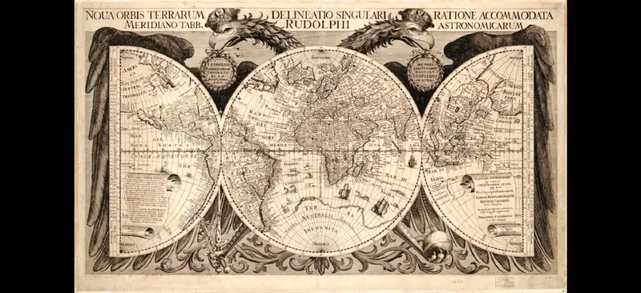
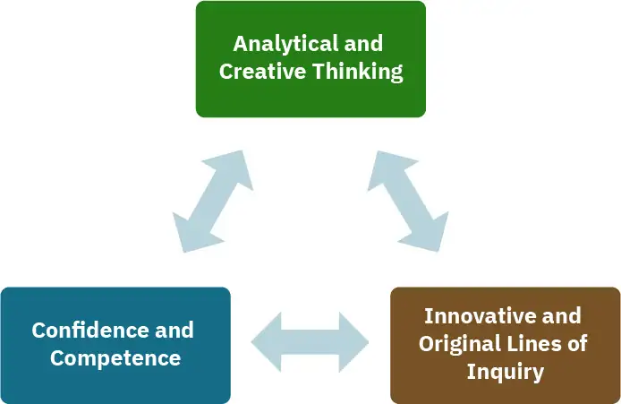
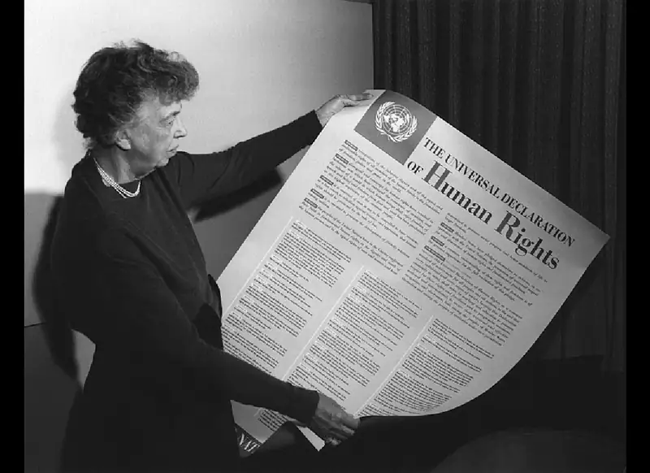
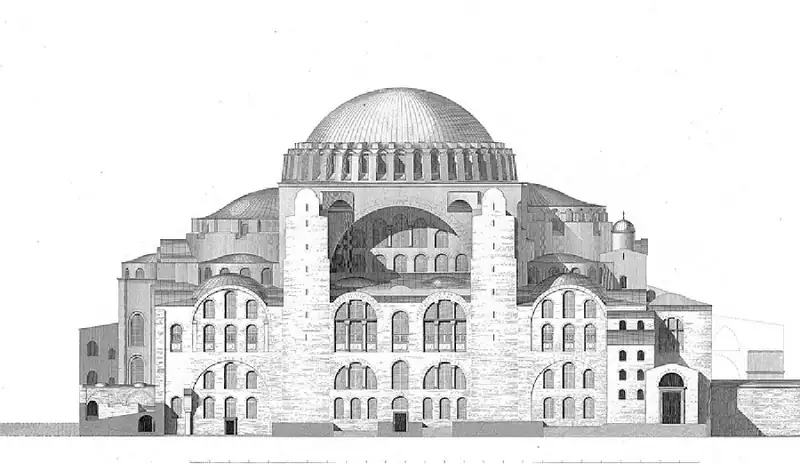
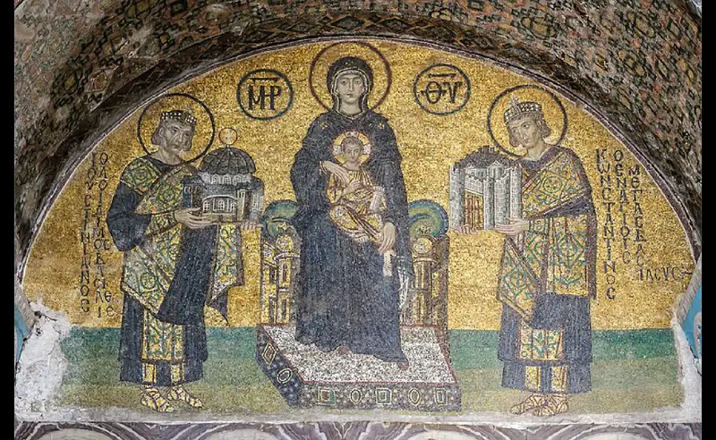
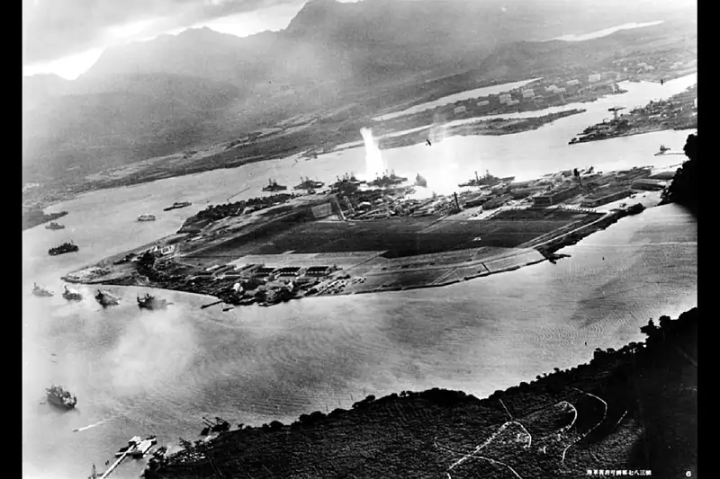
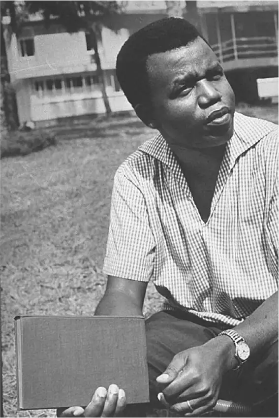
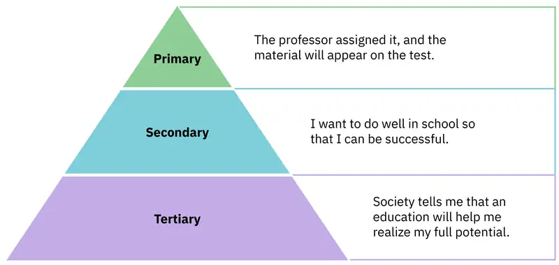
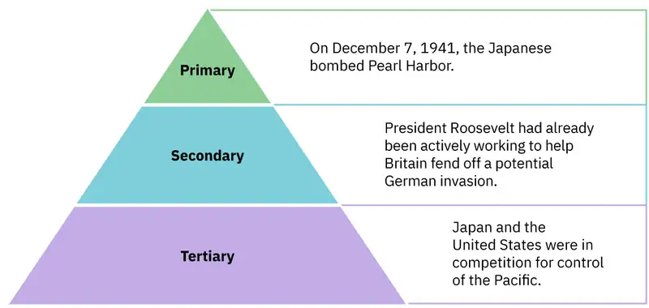

Chapter 1: Understanding the Past¶
Introduction¶

What is history? Is it simply a record of things people have done? Is it what writer Maya Angelou suggested—a way to meet the pain of the past and overcome it? Or is it, as Winston Churchill said, a chronicle by the victors, an interpretation by those who write it? History is all this and more. Above all else, it is a path to knowing why we are the way we are—all our greatness, all our faults—and therefore a means for us to understand ourselves and change for the better.
But history serves this function only if it is a true reflection of the past. It cannot be a way to mask the darker parts of human nature, nor a way to justify acts of previous generations. It is the historian’s task to paint as clear a picture as sources will allow.
Will history ever be a perfect telling of the human tale? No. There are voices we may never hear. Yet each new history book written and each new source uncovered reveal an ever more precise record of events around the world (Figure 1.1). You are about to take a journey into human history.
1.1 Developing a Global Perspective¶
Learning Objectives
By the end of this section, you will be able to:
- Identify the role history plays in higher education
- Discuss the ways in which the study of history can build skills for lifelong learning and success
- Explain how the features of this text will optimize your learning experience
From the legends of Troy heralded by Homer to the contents of digital archives accessed by modern students, the human story has fascinated and instructed those who have tried to understand its complexities. Knowing the past has long been considered a mark of civilization, and its study has never been more important. We have all heard the philosopher George Santayana’s observation, “Those who do not learn from history are doomed to repeat it.” Yet because history is an ever-changing collection of events influenced and shaped by a variety of causes and outcomes, it never truly repeats at all.
Santayana’s comment rings true, however, in that we can discern patterns of human behavior by careful study of the past. To know history is to know ourselves, and understanding history’s nuances opens our imaginations to the possibilities each new situation creates. It is this knowledge of possibilities that allows the student of history to see the present with more clarity and prescience.
World History as Preparation for Life after College¶
History is more than a series of names and dates; those are simply its building blocks, the pieces necessary for completing the whole picture. History is a story, the human story, that connects us both to each other and to the generations that lived before us. And today we study history in a way that grounds students in this shared past while also preparing them for their futures. The liberal arts are intended to help students find fulfillment, to better themselves and their communities through meaningful self-reflection and development. But they have also always prepared students to enter the workplace by honing career skills. To say that a world history class prepares students for the workplace is simply to acknowledge what has always been true.
This world history text has several key features that will help you understand the past in ways that are relevant to the present. Perhaps most important is its recognition that the study of world history prepares us to meet modern challenges. To cover the history of the whole world is daunting, perhaps, but a student must be prepared to engage with the globalization processes that have dominated history for the past few centuries. People around the globe are more integrated than ever by social and economic forces that transcend national boundaries. Both your private and public lives will require knowledge of the world and its people. Understanding the diversity of peoples and ideas and possessing cultural empathy and awareness will allow you to meet global complexities with competence.
The study of history will also enhance your critical-thinking and analytical ability, both of which consistently appear among the top ten skills desired by employers (Figure 1.2). Other skills that have become increasingly important include adaptive thinking, social intelligence, cross-cultural competency, and media literacy. This final skill is critical to modern workplaces. History teaches students how to assess and analyze the material they are reading, as well as how to develop and present content in a meaningful and persuasive way. It also hones a creative mindset that is flexible and open to interpretations and ideas outside our own worldview.

Without question, skills such as critical thinking, analysis, and creativity are developed best through the study of history. Historians must be truly multidisciplinary in the sense that they observe and gather as much information as they can and then interpret that data with the aim of drawing conclusions. The historian also must be a creative thinker because the source material—the data—is human, making it the most complex data imaginable. Historical data is as diverse as the people who make it, and it might be everything from the edicts of kings to the tunes played by street musicians. Historians must also be effective communicators. Who cares about a story nobody reads or a product nobody buys? What company in the world could not use and value someone who can think critically and creatively and then explain and communicate effectively? Historical thinking also provides students with a stronger sense of self, with avenues to explore human existence, and with the skills necessary to navigate the complexity of their world and future workplaces.
This text and its assessment questions will encourage you to analyze large amounts of information, to understand a myriad of concepts, and to make connections across topics. Developing cultural awareness and empathy is also critically important, and studying world history is a way to ensure you have this necessary skill. The influential job site Indeed.com says, “In our workplaces, in our world, we are a diverse people. Cultural competence is increasingly important as our means of communication and collaboration in working environments evolve. Learning how to respect, communicate and collaborate with an increasingly diverse work culture is crucial to optimizing a company’s efficiency and productivity.”
World History and Global Citizenship¶
The study of world history recognizes the integrated nature of modern life and prepares students for diverse, global workplaces. Knowing about the world will prepare you to be a global citizen, someone who may reside in only one nation but who self-identifies as part of the larger world community. Issues in need of solutions, like climate change, social justice, and human rights, are global in scale. You must know the world to be the change it needs. How do you fit in the global environment? What is your story, and how is it linked to that of others?
In many ways, the idea of global citizenship emerged from the human wreckage of the two world wars. Beginning in 1948, the United Nations (UN) established a series of universal declarations that conceived of all people as deserving of human rights and dignity (Figure 1.3). Three such declarations further affirmed the rights of women (Convention on the Elimination of All Forms of Discrimination Against Women, also known as CEDAW, 1979), of children (The Declaration of the Rights of the Child, 1959), and of people with disabilities (The Declaration on the Rights of Disabled Persons, 1975). The UN regularly requires that member nations report on progress in these areas. Words and declarations help to create an ethos, a set of guiding principles. So, in addition to participating in global economies that transcend lines on a map, many in our world recognize that we have also agreed to a series of rights and obligations that do the same.

A BBC poll in 2015–2016 surveyed eighteen countries and found that more than half the respondents believed themselves to be “global citizens.” It also found that in times of prosperity, sentiments favoring a world community grow, while in times of strife, people tend to revert to more local, national identities. Though no one can see the future, it is difficult to imagine turning the clock back on the processes of globalization. Whether you would like to be a global citizen of the world or not, understanding the world is essential.
Link to Learning
What does it mean to be a citizen of the world? Watch this TED Talk by Hugh Evans and think about the ways this concept resonates with you. Do you see yourself as connected to the world? Is that a positive attribute? Why or why not?
Features of This Textbook¶
This text is a great place to begin your journey into the world’s past. It has several features that will help you understand the history of world civilizations from the earliest time to the modern era. For clarity, it adopts a traditional chronological approach, proceeding from ancient to modern times. Each chapter features maps prominently and will help you frame world cultures in their geographic and historical context. You will engage with firsthand accounts of key people and events—including instances in which people’s recollections of the same events might differ. And the text will highlight links between the past and the present to emphasize how earlier knowledge applies to our world.
Of particular note are the feature boxes within each chapter. These present documents and images from the eras you are studying. Sometimes you will be guided outside the text—such as in the Link to Learning boxes—to explore other digital resources that clarify content, expand on ideas, and highlight interesting new work happening in the field. Finally, where appropriate, the text will offer material relevant to your current experiences, to help you understand the links between the past and the present. Following is a quick reference to these features.
In Their Own Words¶
In Their Own Words feature boxes present a source composed in the period the chapter covers and allow you to examine it in context, learning how to critically analyze source material. A short series of questions will help to guide your analysis.
Dueling Voices¶
Dueling Voices feature boxes present either an ongoing historical debate or conflicting reports of the same event or idea that were written around the time it occurred or emerged.
Beyond the Book¶
In Beyond the Book feature boxes, you can explore the value of art, architecture, music, film, and other physical objects as sources in interpreting history. The goal is to demonstrate that the human story resides in a great deal more than just the written word itself. You may also have the opportunity to do some experiential learning.
The Past Meets the Present¶
The Past Meets the Present feature boxes ask you to understand the connections between the material in the chapter and the present. They will prompt you to think about the relevance of a particular historical issue in today’s world.
Because this is a global history, we tried to be true to the essence of world cultures by presenting people’s names in forms as close as possible to their language of origin. These spelling choices have been made by experts in their field based on current research. For example, the text uses the pinyin system of transliteration for writing Chinese names, as opposed to the older Wade-Giles system, because pinyin is the system adopted by the People’s Republic of China and more closely approximates the sounds of Mandarin Chinese. In languages using the Latin alphabet, accents have been retained on all personal names (Hernán Cortés, Napoléon Bonaparte); however, in transliterated languages such as Chinese and Arabic, we have avoided accents and apostrophes whenever possible, unless they are necessary to aid pronunciation and enhance readability. In naming events, places, and other items of historical interest, we have generally chosen the most commonly encountered English variants. Finally, dates are given using the Gregorian calendar, the international standard for civil calendars, with “BCE” to indicate developments occurring before the Common Era and “CE” to mark events in our own era.
The study of world history also requires a strong understanding of geography. You might assume that maps are fairly cut and dried. After all, we can clearly demonstrate where things are, can’t we? For most of history, however, this was not actually the case. Maps are some of the most contested pieces of historical evidence we have because they were almost always made from the perspective of the one making the map, not as an objective practice. Most civilizations put themselves at the center of their known world, for instance. Maps have also been used to aid in the conquest and suppression of peoples. During the Age of Exploration, the Pope arbitrarily divided inhabited territory that was new to Europeans and granted it to Spain and Portugal. Centuries later in Berlin, Germany, European diplomats drew lines on a map of Africa to apportion territory among colonial powers. Think of how written history might change if our surviving maps were indigenous in origin. Even when humanity acquired knowledge of the size and space of things, maps remained inaccurate, often showing Europe as larger than it is and regions of the Global South—Latin America, Africa, and parts of Asia and Oceania—as smaller than their actual size.
Maps also present challenges because some territories are claimed by more than one political entity. There are many examples in the distant past, and even today, of contested regions, such as Crimea and Taiwan, that can make presenting regional geographies difficult. Crimea is claimed by both Russia and Ukraine, and Taiwan claims independence while China considers Taiwan part of its territory. The text will highlight these regions as they arise in the human story so you can explore geography’s complexities.
Link to Learning
For a perspective on how Google Earth reflects the globalization of society, read “World Maps and the Dawn of Globalisation” by Jerry Brotton, a cultural historian and author of The History of the World in Twelve Maps. This brief blog post comments on the precision of GPS map technology as used by Google Earth. As you read it, consider the possibilities and dangers of such technology.
1.2 Primary Sources¶
Learning Objectives
By the end of this section, you will be able to:
- Identify different types of primary sources
- Analyze primary sources in a historical context
- Interpret primary sources effectively
Historians develop interpretations of the past based on source material, and we do the same in this book. From ancient hieroglyphs to works of art to blog posts, from histories and biographies written by later scholars to Google Maps, sources help us build our interpretations of the human story.
Learning to Evaluate Documents and Images¶
There are two main kinds of historical sources, primary and secondary. A primary source is a gateway to the past because it is an object or document that comes directly from the time period to which it refers. Primary sources might be government documents, menus from restaurants, diaries, letters, musical instruments, photographs, portraits drawn from life, songs, and so on. If a historian is looking at Ancient Egypt, a statue of a pharaoh is a primary source for that time period, as are hieroglyphs that tell of the pharaoh’s reign. Primary sources, when we have them, are considered more valuable than other sources because they are as close in time as we can get to the events being studied. Think, for example, of a court trial: The ideal is to have the trial quickly so that witness testimony is fresher and therefore more reliable. With the passage of time, people can forget, they might subconsciously add or take away parts of a memory, and they may be influenced to interpret events differently.
A secondary source is one written or created after the fact. A twentieth-century biography of an Egyptian pharaoh is a secondary source, as are a map drawn in the 1960s to identify the battle sites of World War II (1939–1945) and a museum curator’s blog post about the artistic achievements of the Ming (1368–1644). These types of scholarly sources are critical for the evolution of historical knowledge and are often the place students begin to form an understanding of past events. Secondary sources are useful for setting context and placing a topic in relationship to others of the same era. They also provide access to scholarly research based on primary sources for students whose access might be limited by language or geography. Good research requires both types of sources and some attention to historiography, which is the study of how other historians have already interpreted and written about the past.
All primary sources are not equal. History technically begins with the advent of writing, when humans began to deliberately make records and, after that, to develop the idea that preserving the past was a worthwhile endeavor. This is not to say that there isn’t anything valuable to be found in the oral histories of preliterate societies, or in prehistoric cave paintings and archaeological artifacts. For historians, however, the written word is more accurate evidence for building narratives of the past. For example, imagine a modern magazine with a rock or pop star on the front, dressed for performance in a vibrant or provocative style. If that were the only piece of evidence that existed five hundred years from now, how would historians interpret our era? Without context, interpretation of the past is quite difficult. Studying artifacts is certainly worthwhile, but text offers us greater clarity. Even if the cover of the magazine bore only a caption, like “Pop star rising to the top of the charts,” future historians would have significantly more information than from the photo alone. However, even textual sources must be met with a critical eye. “Fake news” is not new, but the speed at which it travels today is unprecedented. We must investigate the full context of any source and look for corroboration.
It takes time to develop the skills necessary to interpret primary sources. As an example, consider the act of reading a poem. You can read the surface of a poem, the literal meaning of the words presented. But that seldom reflects the true meaning the poet meant to convey. You must also look for nuances, hidden meanings, or repeated metaphors. We approach a primary source in a similar way.
There are four key areas to consider when interpreting sources: the author, the audience, the intent, and the context. Here are some key questions to ask yourself when exploring a new source:
- What kind of source is it? Government documents have a different purpose than personal diaries. A former president commenting on a political issue has a different view from a comedian doing the same.
- Who authored the source and why? Is the author responsible for simply recording the information, or was the author involved in the event? Is the author reliable, or does the author have an agenda?
- What is the historical context? How does the source relate to the events covered in the chapter?
None of the answers disqualify a source from adding value, but precisely what that source brings to the overall picture depends heavily on those answers.
Link to Learning
This is a presentation on working with primary sources produced by the Smithsonian. Pay particular attention to section 2, “Documents.” Read through it and take note of the kinds of questions to ask as you critically assess primary sources. You may want to write them down or have them on hand for reference as you work your way through this text.
In a world where many sources are available in digital format, searching online, as many students do, is a convenient way of doing research. But the internet has just as much misinformation as it has legitimate sources. Historians evaluate the strength of both primary and secondary sources, especially online. How do we decide what a good source is? Some clues are more obvious than others. For example, it is unlikely any truly scholarly material will be found on the first page of a Google search, unless the search terms include key phrases or use targeted search engines such as Google Scholar. Online encyclopedias may be a good place to start your research, but they should be only a springboard to more refined study.
Your work is only as strong as the sources you use. Whether you are writing a paper, a discussion post online, or even a creative writing piece, the better your sources, the more persuasive will be your writing. Sites like Wikipedia and Encyclopedia.com offer a quick view of content, but they will not give enough depth to allow for the critical thinking necessary to produce quality work. However, they are useful for introducing a topic with which you might not be familiar. And if you start with encyclopedic sources, you can often find pathways to better sources. They might spark new lines of inquiry, for instance, or have bibliographic information that can lead you to higher-quality material.
Always make sure you can tell who is producing the website. Is it a scholar, a museum, or a research organization? If so, there is a good chance the material is sound. Is the information cited? In other words, does the source tell you where it got the information? Are those sources in turn objective and reliable? Can you corroborate the site’s information? This means doing some fact checking. You should see whether other sources present similar data and whether your source fits into the narrative developed by other scholars. Does your school library list the site as a resource? Finally, if you are not sure, ask. Librarians work in online spaces too, and you can generally reach out to these experts with any questions.
As you explore world history via this text, you will be asked many times to read and interpret primary sources. These will normally be set off as feature boxes, as noted earlier. Let’s work through a few examples. The goal is to become more familiar with the types of questions you should ask of sources, as well as the variety of sources you will work with throughout the text.
First, an image exercise. The following images are exterior and interior views of the Hagia Sophia in Istanbul, a wonder of the late antique world whose name means “Holy Wisdom” in Greek. Buildings and other material objects change as they are affected by historical events. Images of them can tell us much about those events and the people who enter or interact with them.
The first set of images (Figure 1.4 and Figure 1.5) provide a likeness of the famous church at the time it was built, during the reign of the Byzantine emperor Justinian I (483–565 CE). The domed structure was unique for its engineering and stunning in its effect. Decorated with Greek iconography, the visual images and symbols used in a work of art, the basilica stood as an emblem of Justinian’s power, the awesome nature of the Christian God, and the surviving wealth and stability of the East. Churches at the time were meant to inspire awe; because most people could not read, stories of religious figures and events were told through highly decorative and symbolic images, and obedience and a desire to join a religious community could be motivated by the buildings’ grandeur. As you study the renderings, reflect on the following questions: What are the key features of the building? What does it make you think about? What does it tell you about the period in which it was built? What would you think about it if you were a poor sixth-century farmer, an urban merchant of some wealth, or a foreign leader?


In 1453, nearly a thousand years after the reign of Justinian, the city of Constantinople (now called Istanbul in present-day Turkey) was conquered by Muslim Turks. According to contemporary accounts of the conquest, when the Ottoman leader Sultan Mehmed II came to the Hagia Sophia, he recognized its beauty and saved it from destruction. To Muslims, the Christian God and the Muslim God are the same, so Mehmed made the church a mosque—following a long tradition in the Middle East of continuing the use of sacred spaces. Minarets, towers from which the Muslim call to prayer is issued, were added at the four corners of the building, and Arabic writing was placed beside the ancient Greek iconography.
The second set of images (Figure 1.6 and Figure 1.7) show the Hagia Sophia as it stands today, having also been a museum and now serving as a mosque once again. The building tells a tale spanning hundreds of years and highlights many fascinating aspects of the region’s history. But without the context, its meaning would be far less clear.
Documentary Sources: Competing Narratives¶
Textual, or written, primary sources are considered the best possible resource for historians. They tend to offer both far more context and far more information than other types of sources, and sometimes clues about the writer’s intent. But even they must be approached with method and scrutiny. We must evaluate the author, audience, intent, and context in order to accurately interpret a primary source document. Some questions you might ask about the author include the following: Who wrote the piece and what is their background? What was important to the author? Why might the author have written what they did? In some cases, the answers will be fairly obvious. In others, a deeper inspection might reveal hidden motives.
You must also take into account the planned audience for a document: For whom was it written? Was it meant to be public or private? Is it a letter to a friend or an essay submitted for publication? For a modern example, is it a text to a friend or to a mother? Texts will one day be a source for historians to use, but knowing who sent them, and to whom, will be essential to interpreting them correctly. (For fun, search online using the term “misinterpreted texts.”)
In addition to considering the audience, you should think about the intent: Why was the document written? Was it intended to be a factual account of an event? Was it meant to persuade? Is it a complete falsification? Often people write things that present them in the best light rather than reveal weaknesses.
Finally, you should reflect on the circumstances of the document’s creation. Some questions you may want to ask include the following: What is the general time period of the document, and what was that time like? What was happening when the individual wrote the document? Was there any sort of intimidation or distress? Is it a time of war or peace? Is there religious conflict? Is there an economic crisis? A health crisis? A natural disaster? Could the writer have been fending off an attack or lobbying for one? Are we missing other perspectives or voices we would like to hear?
The answers to these questions will shape your interpretation of the primary source and bring you closer to its true meaning. Most text-based sources have meanings beyond the obvious, and it is the historian’s job to uncover these. Be sure to keep these questions in mind throughout this course and whenever you undertake historical research or are considering the accuracy of information you encounter (Figure 1.8).
![This is a chart composed of four sections. The section at the top is labeled “Author” and includes the questions “What is the author’s background?” and “What motivated the author to produce the source?” The second section is labeled “Audience” and includes the questions “For whom was it written?” and “Was it meant to be public or private?” The third section is labeled “Intent” and includes the questions “Why was the document written?” and “Was it intended to be a factual account of an event?” and “Was it meant to persuade?” The fourth section is labeled “Context” and includes the questions “What was happening when the individual wrote the document?” and “Was there any sort of intimidation or distress?”](img/osx-worldhist-a01-02-questions.webp)
To gain experience using these questions, consider the two accounts in Dueling Voices: The Spanish Arrival in the Aztec Capital, written relatively close to each other in time and dealing with similar subjects from different perspectives. According to the first account, written in 1519 by Hernán Cortés, Indigenous people in the Americas were thrilled to become subjects of Spain when European colonizers arrived. The Aztec, telling of their encounter with the Spanish, relate that the Spaniards killed even the unarmed, which seemed barbaric to the author. What should historians do with such widely competing texts? How do they decide what each one adds to the true story of the conquest of Mexico? As you read, keep these questions in mind.
Dueling Voices: The Spanish Arrival in the Aztec Capital
Hernán Cortés was a Spanish conquistador who conquered the Aztec Empire in what is now central Mexico in 1521. An ambitious but brutal young man seeking fame and fortune, Cortés wrote a series of letters to Charles V describing his exploits in the hope of raising himself in the king’s esteem. In the following letter, written in 1519, Cortés recounts his conquest of Tenochtitlán, the Aztec capital, and describes the Indigenous people he encountered. The letter is followed by an Aztec account of the conquest that describes an event known as the Massacre in the Great Temple, an attack on nobles and warriors who had gathered in Tenochtitlán to celebrate a religious festival. The attack was conducted by Pedro de Alvarado, who had been left in charge while Cortés was absent from the city. At the time of the massacre, Moctezuma, the Aztec ruler, was under house arrest, having previously greeted Cortés on his arrival and invited him into the sacred city.
“In my former despatch [sic], Most Excellent Prince, I gave a list of the cities and towns that had to that time voluntarily submitted to your authority, together with those I had reduced by conquest. I also mentioned having received information from the natives of a certain great Lord, called MUTECZUMA, who, according to their computation of distances, dwelt ninety or a hundred leagues from the coast and the port where I had disembarked; and that, trusting in the greatness of God, and the confidence inspired by the royal name of your Highness, I proposed to go and see him wherever he might be. I also recollect having [. . .] assured your Highness that he should be taken either dead or alive, or become a subject to the royal throne of your Majesty. With this determination I departed from the city of Cempoal, to which I gave the name of Sevilla, on the 16th of August, with fifteen horse and three hundred infantry, all in the best condition for war in which I was able, or the time permitted me to render them. [. . .] I also left the whole province of Cempoal, and all the mountainous region adjacent to the town, containing fifty thousand warriors, and fifty towns and fortresses, in peace and security, and firm in their allegiance to your Majesty, as they have remained to the present time. Although they were subjects of Muteczuma, yet according to the information I received, they had been reduced to that condition by force, within a short period; and when they had obtained through me some knowledge of your Highness, and of your great regal power, they declared their desire to become vassals of your Majesty, and to form an alliance with me. They also begged me to protect them against that mighty Lord, who used violent and tyrannical measures to keep them in subjection, and took from them their sons to be slain and offered as sacrifices to his idols; with many other complaints against him, in order to avoid whose tyranny they embraced the service of your Majesty. —Hernán Cortés, Second Letter to Charles V”“During this time, the people asked Motecuhzoma how they should celebrate their god’s fiesta. He said: “Dress him in all his finery, in all his sacred ornaments.” During this same time, The Sun commanded that Motecuhzoma and Itzcohuatzin, the military chief of Tlatelolco, be made prisoners. The Spaniards hanged a chief from Acolhuacan named Nezahualquentzin. They also murdered the king of Nauhtla, Cohualpopocatzin, by wounding him with arrows and then burning him alive. For this reason, our warriors were on guard at the Eagle Gate. [. . .] But messengers came to tell them to dress the figure of Huitzilopochtli [the god of sun and war]. They left their posts and went to dress him in his sacred finery: his ornaments and his paper clothing. When this had been done, the celebrants began to sing their songs. That is how they celebrated the first day of the fiesta. On the second day they began to sing again, but without warning they were all put to death. The dancers and singers were completely unarmed. [. . .] The Spaniards attacked the musicians first, slashing at their hands and faces until they had killed all of them. The singers—and even the spectators—were also killed. This slaughter in the Sacred Patio went on for three hours. Then the Spaniards burst into the rooms of the temple to kill the others: those who were carrying water, or bringing fodder for the horses, or grinding meal, or sweeping, or standing watch over this work. The king Motecuhzoma [. . .] protested: “Our lords, that is enough! What are you doing? These people are not carrying shields or macanas. Our lords, they are completely unarmed!” The Sun had treacherously murdered our people on the twentieth day after the captain left for the coast. We allowed the Captain to return to the city in peace. But on the following day we attacked him with all our might, and that was the beginning of the war. —Miguel León-Portilla, The Broken Spears: The Aztec Account of the Conquest of Mexico”
- To whom is each author writing?
- How do the authors’ different intentions affect what they wrote?
- One author was on the side of the victorious and one among the vanquished. How does this context affect the tone of the writing?
Textual Sources: The Importance of Language¶
The different types of language used in a source are clues to its interpretation. Linguists call the use of language rhetoric. Rhetorical choices, decisions about the way words are used and put together, are often deliberate and intended to achieve a certain outcome. For example, think about the way you talk to a professor versus the way you talk to a friend. We must closely examine the rhetorical choices in any primary document to correctly interpret it. To practice this skill, consider President Roosevelt’s famous speech in In Their Own Words: Roosevelt’s “Day of Infamy” Speech and the guiding questions that follow.
In Their Own Words: Roosevelt’s “Day of Infamy” Speech
The United States entered World War II in 1941 after the Japanese attacked Pearl Harbor (Figure 1.9), the naval base where the U.S. Pacific fleet moored most of its vessels. It was a surprise attack that killed hundreds, devastated the base, and shocked the country. President Franklin D. Roosevelt went to Congress and asked for a declaration of war against Japan. The speech he gave, however, was about more than this request. Roosevelt used certain words to highlight that the attack was secret and calculated. He also suggested that God was on the side of the United States. As you read, pay special attention to the words Roosevelt uses. Can you pick out a few key rhetorical choices?

“Mr. Vice President, Mr. Speaker, Members of the Senate and of the House of Representatives: Yesterday, December 7th, 1941—a date which will live in infamy—the United States of America was suddenly and deliberately attacked by naval and air forces of the Empire of Japan. The United States was at peace with that nation and, at the solicitation of Japan, was still in conversation with its government and its emperor looking toward the maintenance of peace in the Pacific. Indeed, one hour after Japanese air squadrons had commenced bombing in the American Island of Oahu, the Japanese Ambassador to the United States and his colleague delivered to our secretary of state a formal reply to a recent American message. And while this reply stated that it seemed useless to continue the existing diplomatic negotiations, it contained no threat or hint of war or of armed attack. It will be recorded that the distance of Hawaii from Japan makes it obvious that the attack was deliberately planned many days or even weeks ago. During the intervening time, the Japanese government has deliberately sought to deceive the United States by false statements and expressions of hope for continued peace. The attack yesterday on the Hawaiian Islands has caused severe damage to American naval and military forces. I regret to tell you that very many American lives have been lost. In addition, American ships have been reported torpedoed on the high seas between San Francisco and Honolulu. Yesterday the Japanese government also launched an attack against Malaya. Last night Japanese forces attacked Hong Kong. Last night Japanese forces attacked Guam. Last night Japanese forces attacked the Philippine Islands. Last night the Japanese attacked Wake Island. And this morning the Japanese attacked Midway Island. Japan has, therefore, undertaken a surprise offensive extending throughout the Pacific area. The facts of yesterday and today speak for themselves. The people of the United States have already formed their opinions and well understand the implications to the very life and safety of our nation. As commander in chief of the army and navy I have directed that all measures be taken for our defense. But always will our whole nation remember the character of the onslaught against us. No matter how long it may take us to overcome this premeditated invasion, the American people in their righteous might will win through to absolute victory. I believe that I interpret the will of the Congress and of the people when I assert that we will not only defend ourselves to the uttermost but will make it very certain that this form of treachery shall never again endanger us. Hostilities exist. There is no blinking at the fact that our people, our territory, and our interests are in grave danger. With confidence in our armed forces—with the unbounding determination of our people—we will gain the inevitable triumph—so help us God. I ask that the Congress declare that since the unprovoked and dastardly attack by Japan on Sunday, December 7th, 1941, a state of war has existed between the United States and the Japanese Empire. —Franklin D. Roosevelt, “Day of Infamy””
- What message was Roosevelt conveying to the nation’s people and to the world?
- What word choices did he make to convey this message?
Link to Learning
In his “Day of Infamy” speech, Roosevelt uses a rhythmic cadence to give the impression of imminent danger as Japan attacks other targets. Listen to an audio recording of the speech from the Franklin D. Roosevelt Presidential Library and Museum.
Hidden in History¶
Historians begin their work with a research question and seek to find the sources necessary to build an authentic narrative that answers it. One challenge is that written sources are undeniably valuable but often leave out important details. For example, many speak only of the lives of elites. It is not terribly difficult to find information about kings, queens, and other rulers of the past, but what of their families? Their servants? What of the ordinary people who lived under their rule?
Some groups of people remain hidden in our account of history because few records talk about their lives and experiences. Historians of the 1960s began to revolutionize the discipline by studying history “from the bottom up.” In other words, they began to focus on just those groups that had long been ignored. They used sources like church records, newspapers, and court hearings to illuminate the lives of the poor and illiterate. Court hearings were one venue in which the words of people from all backgrounds were recorded as they served as witnesses and as accused. Mothers and fathers also sought out those who could write letters for them to get pardons for loved ones convicted of crimes. These kinds of sources shed light on those whose voices were rarely heard, either while they lived or after they died. Great strides have been made in the field of social history, which looks beyond politics to the everyday aspects of life in the past. But it remains difficult, lacking records, to represent women, the poor, and minority communities on an equal footing with those who have traditionally held power.
These kinds of limitations can also apply to regions of the world. Civilizations with long-standing and abundant historical documents often have more complete histories than others. Much is known, for example, about European history and Chinese history, both of which have deep roots in the written word. Europe, after all, had Herodotus, and China had Sima Qian. Herodotus, who lived in the fifth century BCE, is called the father of history in the West; he wrote the history of the Greco-Persian wars. Sima Qian, born in the middle of the second century BCE, is referred to in China as the father of history for his work Records of the Grand Historian, a sweeping history of the Han dynasty. The Middle East and India also have rich textual histories. In Africa and Latin America, the historical record is less full.
In the case of Latin America, the historical record was significantly altered when the Europeans arrived. Believing that much of the writing of Indigenous people that they found spoke of a religion and culture they meant to replace, the conquerors deliberately destroyed it. Writing Africa’s history is complicated by both its size and its diversity, as well as its colonial past. Due to the extremes of climate, surviving written documents and even archaeological evidence are not easily found, and what exists of written history is often tainted by the bias of the colonial observers who wrote it. New scholarship is emerging in both regions, generated by historians who look with fresh eyes and seek to understand history as it was. To gain some insight into the way history is relevant to the present, read Link to the Past: Chinua Achebe on the Value of Indigenous History and consider the questions posed.
Link to the Past: Chinua Achebe on the Value of Indigenous History
The following is an interview with the noted Nigerian novelist Chinua Achebe (1930–2013) in The Atlantic. Achebe, author of several important books including Things Fall Apart, which explores the impact of British missionary work in Nigeria, speaks to both the historic legacy of colonialism—the practice of controlling another people or area, usually for economic gain—and the need to first see ourselves independently and then in relation to others (Figure 1.10).

“But, of course, something doesn’t continue to surprise you every day. After a while I began to understand why the book [Things Fall Apart] had resonance. I began to understand my history even better. It wasn’t as if when I wrote it I was an expert in the history of the world. I was a very young man. I knew I had a story, but how it fit into the story of the world—I really had no sense of that. Its meaning for my Igbo people was clear to me, but I didn’t know how other people elsewhere would respond to it. Did it have any meaning or resonance for them? I realized that it did when, to give you just one example, the whole class of a girls’ college in South Korea wrote to me, and each one expressed an opinion about the book. And then I learned something, which was that they had a history that was similar to the story of Things Fall Apart—the history of colonization. This I didn’t know before. Their colonizer was Japan. So these people across the waters were able to relate to the story of dispossession in Africa. People from different parts of the world can respond to the same story, if it says something to them about their own history and their own experience. —Chinua Achebe in Katie Bacon, “An African Voice,” The Atlantic”
- Try to sum up Chinua Achebe’s words in one sentence.
- In what ways do you think colonialism has influenced the writing of history?
1.3 Causation and Interpretation in History¶
Learning Objectives
By the end of this section, you will be able to:
- Describe causation as it is used in the study of history
- Identify the levels of causation
- Analyze the role of interpretation in producing an accurate historical record
The study of history has always been about more than giving a recounting of past events. It is about remembering our shared past, making human connections that traverse centuries, and helping us know more about ourselves. Once we know how to muster as many facts as we can, we must consider the next step—understanding causation. Causation is the why behind events; understanding it is the way historians get at the heart of the matter. The powerful and public forces that change society and government are also present when individuals make choices about their lives. What, then, are the forces that shape history, that shift it one way or another, that move people to change on both an individual and a societal level?
All of us see these historical causes through the lens of our own experiences, circumstances, and value systems. Historians, particularly those trained in recent times, work to eliminate as much bias as they can, but we cannot wholly disconnect ourselves from our environment and beliefs. Bias can even sometimes act as a positive force, allowing us to look at the past in new ways. For example, historians in the 1960s and 1970s began to question their discipline’s traditional focus on elites and sought out new sources that highlight the lives of more ordinary people. Driven by a bias in favor of the counterculture and politics of the era, they wanted to know more about what all people experienced.
Levels of Causation¶
In their quest for the why of an event, historians look at both the immediate and the long-term circumstances of that event. Not all causes are equally significant; we need to rank them in importance. Let us begin with a thought exercise. At this moment in your history, you are reading this textbook. Why? Perhaps you would say, “Because the instructor told me to, and it will be on the test.” Certainly that is a valid reason. But if you think a bit more deeply, you might also say, “I want to do well in my education so I can be successful.” And at an even deeper level, “Society tells me that education is necessary to realize my full potential, find fulfillment, and participate in the community.”
Think of all the other things that caused you to be here in this moment. There are no wrong answers; just explore the levels of causation behind your reading right now. Now rank them in order of importance. Which causes had the most influence on you, and which were more remote? Your response might look something like a pyramid (Figure 1.11). The primary cause is the most immediate. It is the spark. The secondary cause is once removed. The tertiary cause offers the broader context.

To reach a true understanding of why you are reading your text, you needed to know yourself well, understand the connection between education and career, and assess how social factors, such as the value employers place on education, influence your decision-making. The more aspects of causation historians can find, the closer they can get to the true nature of the event.
Let’s try another example, this one from history. Why did the United States enter World War II in 1941? In this case, the immediate cause was Japan’s attack on the U.S. naval base at Pearl Harbor in Hawaii, but hostilities had been brewing for some time. The president of the United States, Franklin Roosevelt, had been looking for ways to help the British fend off a potential German invasion, and Japan and the United States had long-standing issues over the use of power in the Pacific (Figure 1.12).

Here is one more example. In 1453, Mehmed II laid siege to the city of Constantinople. Why? Mehmed II was the leader of the Ottoman Empire, the sultan. He had been badly treated by his father, and when he ascended the throne, he felt he had something to prove. The Ottomans had tried several times to take Constantinople because it lay at the crossroads of many civilizations. Conquest had long been a reliable mechanism for bringing new people and wealth into the Ottoman Empire and for keeping its economy prosperous. All these factors played a role in the siege undertaken by Mehmed II. Can you order them by importance? This is the point where historians usually disagree, even about events for which most of the facts are clear. A historian who believes powerful leaders are the most influential factor driving events would rank Mehmed’s personal goals first (Figure 1.13). Base your ranking on the strongest arguments you can make.
![This is a triangle shaped chart consisting of three sections. The top of the triangle is labeled “Primary” and says “Mehmed II wanted to make a statement and achieve what no other sultan had been able to achieve.” The middle of chart is labeled “Secondary” and says “Constantinople was a great prize. Not just any city, it lay at the heart of East/West trade. Its conquest would send a clear message.” The bottom of the chart is labeled “Tertiary” and says “The Ottoman Empire had been expanding since its founding. Conquest served to bring new wealth and new people into the empire.”](img/osx-worldhist-a01-03-prisecter3.webp)
There can be more than three causes to any event, of course, and because human choice always plays a role, we sometimes cannot separate events on the big stage from the smallest of personal moments in history. The context of the Ottoman Empire’s continuous expansion set the scene in this example, and Mehmed II’s desire to prove his ability was the spark.
Before moving on, try one more example on your own. Pick a moment in history with which you are familiar and follow the same process.
Interpretation in History¶
Hand in hand with bringing causation to light is discovering what informed the choices people made in the past. What makes people act as they do? For much of history, we found the answer in the actions of elites—tsars, sultans, kings, and queens. The first historians largely concerned themselves with the study of wars and rulers, in accordance with the great man theory of history that credits leaders and heroes with triggering history’s pivotal events. Although these historians gave some attention to historical detail, there was also an equal measure of bravado, exaggeration, and political spin in their work. This seemed reasonable in a world where the king’s choice became everyone’s choice and where sources rarely spoke about anyone other than noble lords and ladies. That this type of history remained the norm for so long was also a function of who was writing it.
In the West, Thomas Carlyle, a nineteenth-century Scottish historian, considered the study of the lives of “big men” enough to understand all of history. Higher education was the privilege of only the rich; it must have seemed quite natural to believe that only the elites could move history. These ideas began to change, however, if slowly. In the early nineteenth century, a new school of thought called Romanticism emerged. The Romantics believed there was greatness in everyday life. Even a small flower was worthy of a poem, and the plight of a lowly squire was as important as the worries of the great lord of the manor, for both were essential actors in the human experience. The advent of Romantic art, poetry, music, and novels paved the way for a broad reexamination of what was worth knowing and studying. Writing a little later, in 1860, the Russian novelist Leo Tolstoy argued that there is more to history than the actions of one person. In his novel War and Peace, he contended that the “general mass of men” who participate in history are the ones who truly cause events.
Dueling Voices: Great Men, or Everyone?
In an 1840 lecture on heroes, Thomas Carlyle coined the term “Great Men” to describe the kind of history he considered worthy, the study of elite men in positions of power. In his novel War and Peace, the Russian novelist Leo Tolstoy argued that there is far more to history than the actions of one person. In the following excerpts, consider the viewpoint of each writer.
“As I take it, Universal History, the history of what man has accomplished in this world, is at bottom the History of the Great Men who have worked here. They were the leaders of men, these great ones; the modellers, patterns, and in a wide sense creators, of whatsoever the general mass of men contrived to do or to attain; all things that we see standing accomplished in the world are properly the outer material result, the practical realization and embodiment, of Thoughts that dwelt in the Great Men sent into the world: the soul of the whole world’s history, it may justly be considered, were the history of these. [. . .] We cannot look, however imperfectly, upon a great man, without gaining something by him. He is the living light-fountain, which it is good and pleasant to be near. The light which enlightens, which has enlightened the darkness of the world; and this not as a kindled lamp only, but rather as a natural luminary shining by the gift of Heaven; a flowing light-fountain, as I say, of native original insight, of manhood and heroic nobleness;—in whose radiance all souls feel that it is well with them. —Thomas Carlyle, “Lecture on Heroes””“In historical events (where the actions of men are the subject of observation) the first and most primitive approximation to present itself was the will of the gods and, after that, the will of those who stood in the most prominent position—the heroes of history. But we need only penetrate to the essence of any historic event—which lies in the activity of the general mass of men who take part in it—to be convinced that the will of the historic hero does not control the actions of the mass but is itself continually controlled. It may seem to be a matter of indifference whether we understand the meaning of historical events this way or that; yet there is the same difference between a man who says that the people of the West moved on the East because Napoleon wished it and a man who says that this happened because it had to happen, as there is between those who declared that the earth was stationary and that the planets moved round it and those who admitted that they did not know what upheld the earth, but knew there were laws directing its movement and that of the other planets. There is, and can be, no cause of an historical event except the one cause of all causes. But there are laws directing events, and some of these laws are known to us while we are conscious of others we cannot comprehend. The discovery of these laws is only possible when we have quite abandoned the attempt to find the cause in the will of some one man, just as the discovery of the laws of the motion of the planets was possible only when men abandoned the conception of the fixity of the earth. —Leo Tolstoy, War and Peace”
- Which kind of history do you prefer, the “great man” kind or what we might call the “everyone” kind? Why?
- Whose argument is more convincing, Carlyle’s or Tolstoy’s? Why?
While on one hand historians began to look at people of the lower classes as more integral to the human story, history as a discipline became dominated by the same set of colonial powers that were conquering much of the globe in the nineteenth century. Therefore, two divergent streams of thought were operating simultaneously, and the picture of history both expanded in terms of class and contracted in terms of diversity. One of the early European schools of thought was progressive history, which viewed history as a straight line to a specific destination. Historians with this “progressive” view believed societies were becoming more democratic over time and that the advance of republican governments was inevitable. Their perspective might also be considered a form of teleological history, which proposes that history is moving to a particular end, a culmination of the human experience. Progressive historians believed in the betterment of people and of society, so long as it occurred on a European model. Progress looked only one way: the Western way. Consider what Chinua Achebe (quoted in Link to the Past: Chinua Achebe on the Value of Indigenous History) would have said about European democracy and republicanism.
In the twentieth century, particularly after World War I, the idea of inevitable human progress seemed laughable. People grew more willing to question the authority of elites because these leaders were of little help once war began. Historians became more interested in the irrational aspects of the human condition, the psychology behind people’s choices. This is one reason for the rise of contemporary intellectual history, which looks at the ideas that drive people to make certain choices and focuses on philosophical questions and the history of human thought.
The counterculture of the 1960s in the West deepened people’s desire to challenge existing norms, such as the lack of rights for women and for racial minorities. The field of social history, guided by the concept that history is made by all people and not just elites, became much more important during this period (Figure 1.14). In this context, young historians and sociologists began to develop new ideas. In their 1966 book The Social Construction of Reality, for example, sociologists Peter Berger and Thomas Luckmann argued that our belief systems are informed by social constructs, ideas that have been created and accepted by the people in a society, such as the concepts of class distinction and gender. Social constructs influence the ways people think and behave.
![This is a chart composed of three sections. The first section is labeled “Progressive Interpretation” and says “History moves in one direction toward more democratic values in society. Scholarship highlighted political changes.” The second section is labeled “Intellectual History” and says “History is moved by ideas, which drive people to make particular choices. Scholarship investigated the history of human thought and philosophy.” The third section is labeled “Social History” and says “History is moved by all people and not just elites. Scholarship looked at issues affecting all classes and often included consideration of gender.”](img/osx-worldhist-a01-03-theories.webp)
To understand history, you must understand the social construction of reality, which is the way people define roles and perceive themselves within a social context. Consider our earlier thought exercise. You believe education is important. Why? Who has said that to you in the past? How did you come to believe it? In other words, what is your social construction of education, and where did it come from?
Social constructs exist everywhere and inform many decisions we make, often on a subconscious level. For example, consider the following questions:
- What do you buy a five-year-old girl for her birthday? What do you buy for a boy the same age? What influenced your decision?
- What would you wear to a job interview? What would you wear to a party? Why?
- To which person standing at the front of a classroom would you give more respect: a woman dressed in a tailored suit, or a man wearing jeans and a t-shirt? Why?
In addition to examining reality as socially constructed, twentieth-century historians made interpretations through the lenses of Marxism, which considers history to be driven by class struggle, women’s history (now usually referred to in the context of gender history), which sees history as driven by power differences between men and women, and postcolonialism, which focuses on the history of places formerly occupied by colonial powers. In the process we call revisionism, each additional lens revised the great man story of history, adding new key players and viewpoints.
Let us look at one more example. How would each school of historical thought approach the story of colonial Latin America between the Spanish conquest that began in 1493 and the independence movements of the 1820s? The progressive historian might explore the growth of democratic legal systems or people’s increased interest in republican forms of government. The intellectual historian might consider the Indigenous literature and philosophy of the period. The social historian would look at what conquered people ate, how they worked, and what they looked for in marriage partners. A Marxist historian would examine unfair labor practices and moments of class conflict like rebellion or riot. The gender historian would focus on the role that social constructs of gender played in the lives of people in the past. And the postcolonialist would highlight why aspects of colonialism, such as racism and poverty, remain influential after independence. All these interpretative elements help us weave a more complete picture of the past.
The variety of interpretations open to historians also helps us put in the final piece, which is the practice of historical empathy, the ability to meet the past on its own terms and without judgment or the imposition of our own modern-day attitudes. To fully embrace the study of the past, the student of history must be able to set aside the assumptions of the modern era. Everyone has a set of biases, generated by the people who influence our lives and the experiences that shape who we become. Historians must spend the time necessary to investigate these biases and understand how they affect their interpretations. It is not the historian’s job to pass judgment on the past, but to present it as clearly as possible and to preserve that clarity for future generations. This may mean reflecting impartially on historical positions, attitudes, or decisions we might find abhorrent as viewed from today’s world. However, the more strands of history we can investigate and bring together, the more accurate the picture will be. And there is still much work to be done. For example, recent and ongoing research into LGBTQ+ studies, Indigenous studies, and the history of the Global South will continue to sharpen our image of the past.
The bottom line is that interpretation plays a central role in the field of history. And changes in our interpretation increase the number of ways we can get a clearer picture of those who lived before us. The danger lies in using only one lens. Yes, historians choose some causes as more important than others, but only after considering all the information available.
Chapter Review¶
Key Terms¶
- chronological approach
- an approach to history that follows a timeline from ancient to modern
- global citizen
- a person who sees themselves as responsible to a world community rather than only a national one
- great man theory
- the view that it is enough to study the deeds and impact of important leaders to paint an accurate picture of the past
- historical empathy
- the ability to see the past on its own terms, without judgment or the imposition of our own modern-day attitudes
- historiography
- the study of how historians have already interpreted the past
- iconography
- the use of images and symbols in art
- intellectual history
- the history of ideas, which looks at the philosophies that drive people to make certain choices
- primary cause
- the most immediate reason an event occurred
- primary source
- a document, object, or other source material from the time period under study
- progressive history
- a school of thought that views history as a straight line to a specific and more democratic destination
- revisionism
- the process of altering our interpretation of historical events by adding new elements and perspectives
- rhetoric
- the way words are used and put together in speaking or writing
- secondary source
- a document, object, or other source material written or created after the time period under study
- social constructs
- ideas such as class and gender created and accepted by the people in a society that influence the way they think and behave
- social history
- a field of history that looks at all classes and categories of people, not just elites
Summary¶
1.1 Developing a Global Perspective¶
Knowing the past, the human story, has long been considered a mark of civilization, and its study has never been more important. The study of world history provides the skills necessary to meet global workforce needs while at the same time developing a sense of self and place in our global community. You will gain critical-thinking and analysis skills that will help you fulfill the role of a global citizen in our interconnected world. This text will help you approach history with an open mind, and it will engage you in meaningful ways, often highlighting content that remains relevant in today’s society.
1.2 Primary Sources¶
Primary sources are the first-hand evidence with which historians form a foundation of knowledge of the past. Interpreting them requires attention to four key areas: the author, the audience, the intent, and the context. Secondary sources offer valuable starting points for inquiry and context, but students must be aware of any bias they contain. Despite the efforts of generations of historians, there are still people and regions we do not know much about. We must hope that new generations of historians will continue to hone our interpretation of the past.
1.3 Causation and Interpretation in History¶
The historian’s main job is to discover why history happened as it did. What caused the events that have shaped our shared human past? To answer this question, historians apply rigorous interpretative methodology rooted in the search for causation. They study events for both immediate causation and contributing factors, while avoiding judgment and remaining open to revision. You now have the tools you need to fully engage with the material in this text and begin your journey into the human past.
Check Your Understanding Questions¶
1.1 Developing a Global Perspective¶
1.
2.
1.2 Primary Sources¶
3.
4.
1.3 Causation and Interpretation in History¶
5.
6.
Application and Reflection Questions¶
1.1 Developing a Global Perspective¶
7.
1.2 Primary Sources¶
8.
9.
1.3 Causation and Interpretation in History¶
10.
11.
12.
13.
Review Questions¶
1.2 Primary Sources¶
14.
15.
1.3 Causation and Interpretation in History¶
16.
17.
18.
19.
Adapted from World History, Volume 1, to 1500 by OpenStax, licensed under CC BY 4.0. Access the original for free at openstax.org. Changes: converted to the web reading format of The Open Book Project.